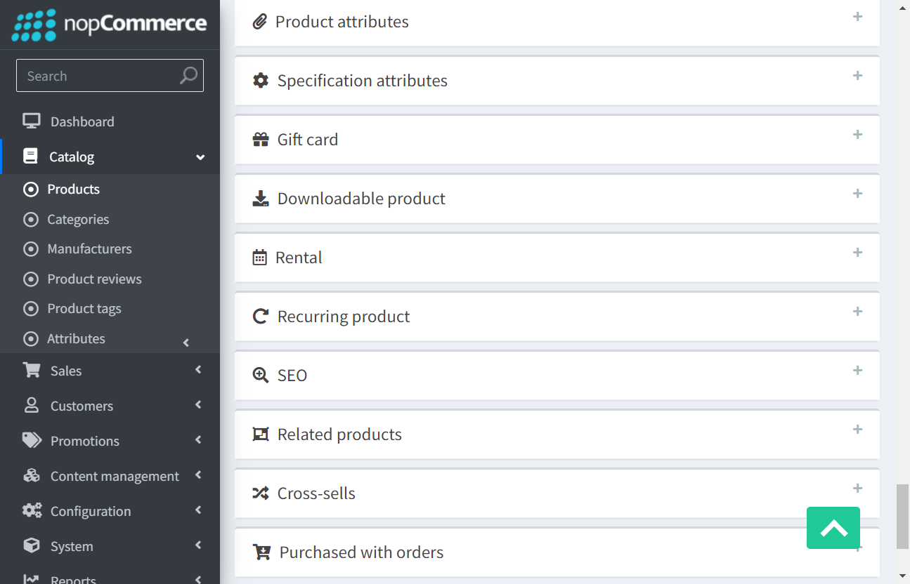

-
Title of your feature
1:41:58 PM / 00:03:27:430 Fail
Title of your feature
02.17.2023 1:41:58 PM 02.17.2023 1:45:26 PM 00:03:27:430 · #test-id=1I want to use this template for my feature fileFailloginGiven I open browserWhen i enter send keys "admin@yourstore.com" And "admin"When i click loginThen see the dashboardpageWhen i click the productpage and " Products" optionThen i see the products pageWhen i click the edit optionWhen i click multimedia table and add the pictureStepdefinitions.stepdefinitions.takescreenshot(io.cucumber.java.Scenario)loginPassloginGiven I open browserWhen i enter send keys "admin@yourstore.com" And "admin"When i click loginThen see the dashboardpageFailAdd customerGiven I open browserWhen i enter send keys "admin@yourstore.com" And "admin"When i click loginThen see the dashboardpageWhen i click customers link And i click customers option "customers"When i click Add new buttonWhen i set customer infoEmail Password firstname lastname Gender Date of birth companyname customer roles vendor durgatejam814@gmail.com 14221A0387a@ durga teja Male 04/08/1997 teja Administrators Vendor 1 When i enter all details And click save buttonStep skippedStepdefinitions.stepdefinitions.takescreenshot(io.cucumber.java.Scenario)Failsearch the customerStepdefinitions.stepdefinitions.setupbrowser()Given I open browserStep skippedWhen i enter send keys "admin@yourstore.com" And "admin"Step skippedWhen i click loginStep skippedThen see the dashboardpageStep skippedWhen i click customers link And i click customers option "customers"Step skippedWhen i enter the sendkeys email "durgam799@gmail.com"Step skippedStepdefinitions.stepdefinitions.takescreenshot(io.cucumber.java.Scenario)
-
org.openqa.selenium.NoSuchElementException
1 tests
org.openqa.selenium.NoSuchElementException
1 failedStatus Timestamp TestName Fail 13:44:33 PM When i set customer info Title of your feature.Add customer.When i set customer info -
org.openqa.selenium.ElementNotInteractableException
1 tests
org.openqa.selenium.ElementNotInteractableException
1 failedStatus Timestamp TestName Fail 13:42:41 PM When i click multimedia table and add the picture Title of your feature.login.When i click multimedia table and add the picture -
org.openqa.selenium.NoSuchWindowException
1 tests
org.openqa.selenium.NoSuchWindowException
1 failedStatus Timestamp TestName Fail 13:44:54 PM Stepdefinitions.stepdefinitions.takescreenshot(io.cucumber.java.Scenario) Title of your feature.Add customer.Stepdefinitions.stepdefinitions.takescreenshot(io.cucumber.java.Scenario) -
org.openqa.selenium.remote.UnreachableBrowserException
2 tests
org.openqa.selenium.remote.UnreachableBrowserException
2 failedStatus Timestamp TestName Fail 13:44:54 PM Stepdefinitions.stepdefinitions.setupbrowser() Title of your feature.search the customer.Stepdefinitions.stepdefinitions.setupbrowser()Fail 13:45:26 PM Stepdefinitions.stepdefinitions.takescreenshot(io.cucumber.java.Scenario) Title of your feature.search the customer.Stepdefinitions.stepdefinitions.takescreenshot(io.cucumber.java.Scenario)
-
@tag3
1 tests
@tag3
1 failedStatus Timestamp TestName Fail 13:44:54 PM search the customer Title of your feature.search the customer -
@tag1
2 tests
-
@tag2
1 tests
@tag2
1 failedStatus Timestamp TestName Fail 13:43:24 PM Add customer Title of your feature.Add customer -
@tag
4 tests
@tag
1 passed 3 failedStatus Timestamp TestName Fail 13:41:58 PM login Title of your feature.loginPass 13:42:57 PM login Title of your feature.loginFail 13:43:24 PM Add customer Title of your feature.Add customerFail 13:44:54 PM search the customer Title of your feature.search the customer
Started
Feb 17, 2023 01:41:58 PM
Ended
Feb 17, 2023 01:45:26 PM
Features Passed
0
Features Failed
1
Features
Scenarios
Steps
Timeline
Tags
| Name | Passed | Failed | Skipped | Others | Passed % |
|---|---|---|---|---|---|
| @tag3 | 0 | 1 | 0 | 0 | 0% |
| @tag1 | 1 | 1 | 0 | 0 | 50% |
| @tag2 | 0 | 1 | 0 | 0 | 0% |
| @tag | 1 | 3 | 0 | 0 | 25% |